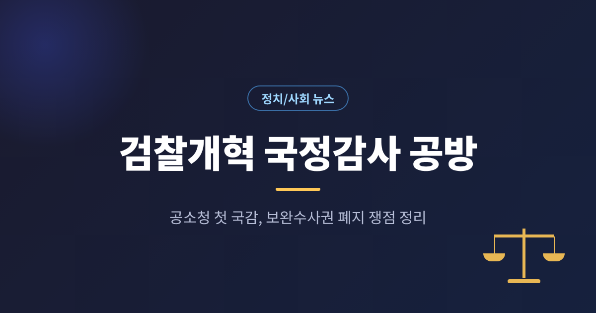
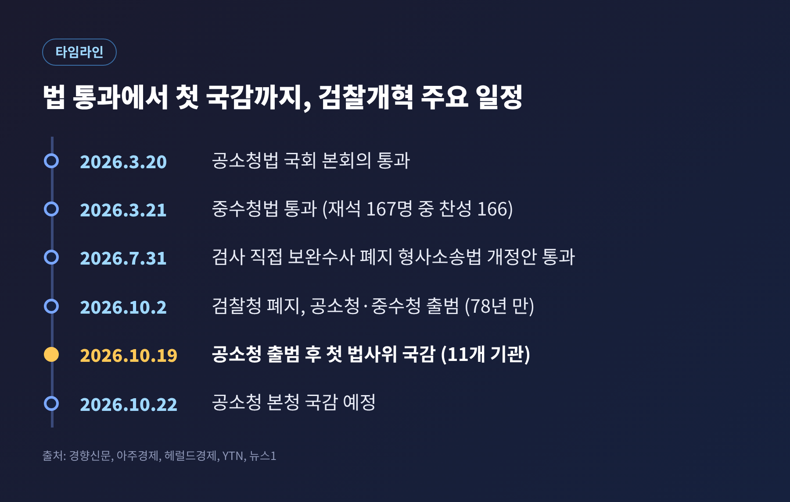
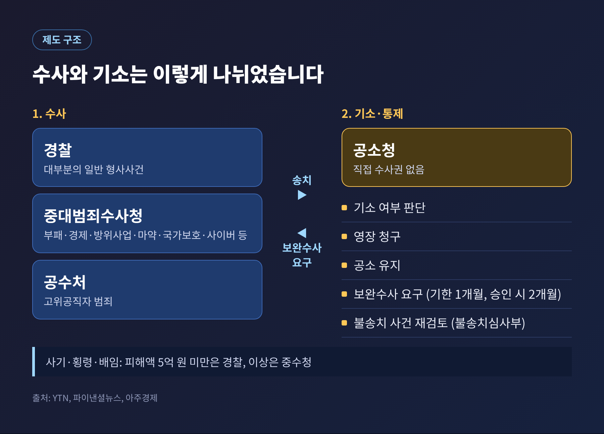
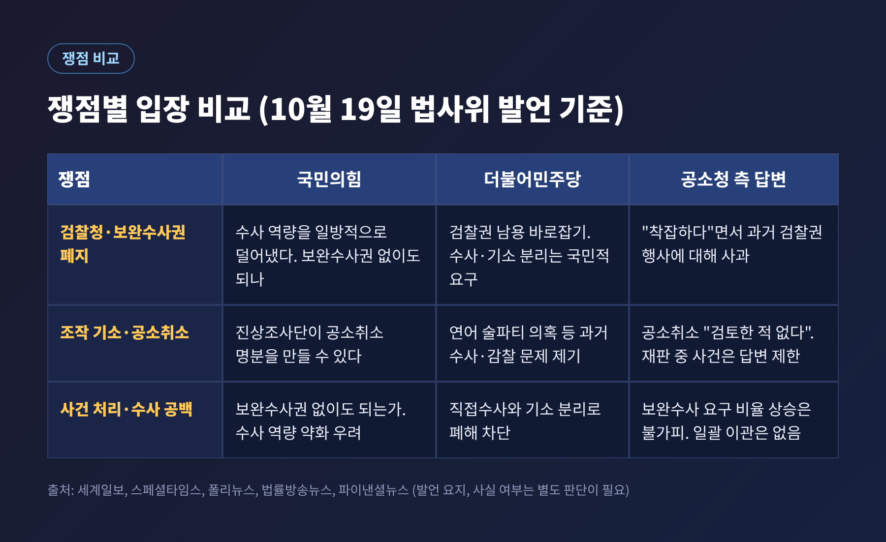
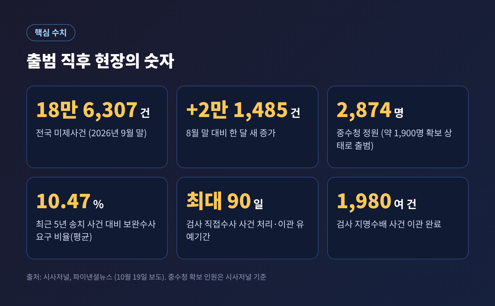
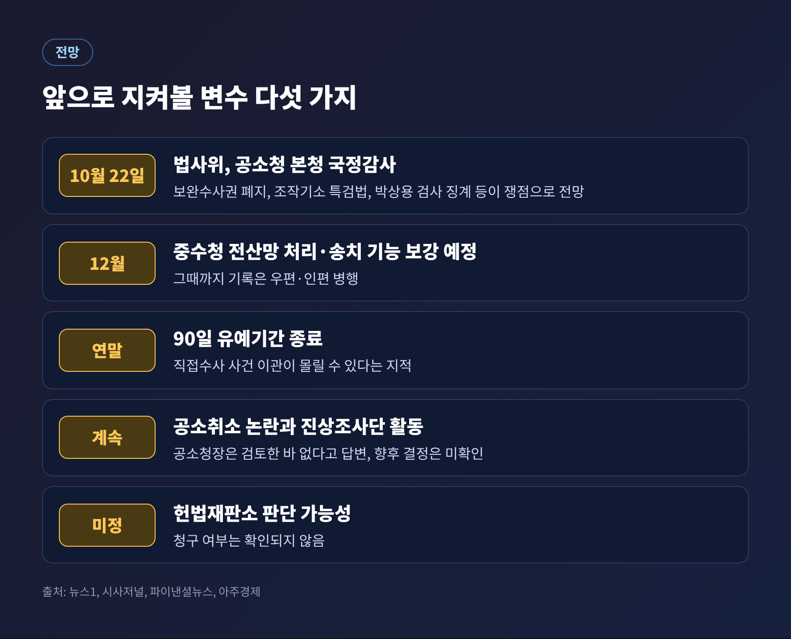

2026년 10월 19일 국회 법제사법위원회는 공소청 출범 이후 처음으로 서울·수원광역공소청 등을 대상으로 국정감사를 열었습니다. 이 글에서는 검찰개혁 국정감사에서 무엇이 쟁점이 되었는지, 제도 구조와 여야의 입장은 어떻게 갈리는지 확인된 보도를 바탕으로 정리해 보겠습니다.
19일 법사위는 서울광역공소청(옛 서울고검), 수원광역공소청, 서울중앙지방공소청 등 11개 기관을 감사했습니다. 세계일보는 같은 날 아침 보도에서 보완수사권 폐지와 이른바 '조작 기소' 의혹을 둘러싼 충돌을 예상했습니다. 실제로 회의장에서는 검찰청 폐지의 정당성과 옛 검찰 수사의 적정성을 두고 고성이 오갔습니다.
분위기를 가장 잘 보여 준 장면은 박철우 서울중앙지방공소청장의 답변이었습니다. 국민의힘 곽규택 의원이 소회를 묻자 박 청장은 직접 부패 범죄를 수사하는 기능과 보완수사 기능이 사라지고 명칭도 바뀐 데 대해 "착잡하다"고 답했습니다. 다만 같은 자리에서 최근 검찰권 행사에 절제되지 못하거나 형평성·공정성에 어긋난 부분이 있었다며 국민에게 사과했습니다. 조국혁신당 박은정 의원은 이 사과가 충분하지 않다는 취지로 반성을 요구했습니다.
검찰청은 1948년 출범해 78년 만인 2026년 10월 2일 폐지되었습니다. 수사와 기소를 한 기관이 함께 맡던 구조가 갈라진 것입니다. 국정감사는 새 체제가 실제로 어떻게 돌아가는지 국회가 처음 점검하는 자리였습니다.
관심은 두 갈래로 나뉩니다. 하나는 정치적 논쟁입니다. 대통령 관련 재판의 공소취소 가능성, 이른바 조작 기소 진상조사 같은 사안이 얽혀 있습니다. 다른 하나는 실무입니다. 사건을 처리할 인력과 전산이 준비되었는지, 수사 공백은 없는지가 쟁점입니다. 두 갈래는 서로 영향을 주고받으며 이번 감사에서 한꺼번에 불거졌습니다.
개혁의 법적 뼈대는 올해 상반기부터 순차적으로 마련되었습니다. 공소청법은 3월 20일, 중대범죄수사청법은 3월 21일 국회 본회의를 통과했습니다. 중수청법은 재석 167명 중 찬성 166명, 반대 1명이었습니다. 검사의 직접 보완수사를 없애는 형사소송법 개정안은 7월 31일 여당 주도로 처리되었고, 국민의힘은 필리버스터로 맞섰습니다.

시행 후 구조는 다음과 같습니다.

보완수사 절차도 달라졌습니다. 공소청이 기소가 어렵다고 판단하면 수사기관에 보완수사를 요구하고, 수사기관은 1개월 안에 이를 마쳐야 합니다. 아주경제는 검사가 승인하면 기간이 2개월로 늘어나고, 재요구 횟수에는 제한이 없다고 전했습니다. 이미 진행 중이던 검사 직접수사 사건은 최대 90일의 유예기간 안에 공소청이 처리하거나 다른 수사기관으로 넘겨야 합니다.
국민의힘 곽규택 의원은 정치적 이유로 수사 역량을 일방적으로 덜어냈다고 비판했습니다. 김태규 의원은 보완수사권 없이도 괜찮은지 물었고, 박형수 의원은 검사들이 "반쪽 검사"가 되었다고 말했습니다. 김태규 의원은 검찰 폐지가 노무현 전 대통령 서거 이후 쌓인 복수심의 결과라는 취지로 주장했고, 서영교 법사위원장은 해당 발언의 근거가 사실과 다르다고 반박하며 고성이 오갔습니다. 어느 쪽 주장이 맞는지는 보도에서 확인되지 않았습니다.
더불어민주당 김용민 의원은 수사와 기소를 분리하면 이른바 '봐주기 수사'와 사건 조작 같은 부작용이 줄어든다고 주장했습니다. 김기표 의원은 보완수사 요구권, 기소권, 공소 유지권도 상당한 권력이라고 짚으며, 직접수사권과 기소권을 한 기관이 함께 가질 때 문제가 생긴다고 말했습니다. 김용민 의원은 박 청장에게 "중수청에서는 거악 척결이 안 되느냐"고 되물었고, 박 청장은 해당 발언이 공소청에서 하지 못한다는 뜻이라고 정리했습니다.
국민의힘 윤상현 의원은 이재명 대통령 관련 사건의 공소취소 검토 여부를 물었습니다. 박 청장은 검토한 적이 없고, 법무부나 공소청 본청에서 의견이나 자료를 요청받은 적도 없다고 답했습니다. 국민의힘은 법무부 검찰인권존중미래위원회 진상조사단이 대장동·대북송금 사건을 조작 기소로 결론 내려 공소취소의 명분으로 삼을 수 있다고 주장했습니다. 이에 대한 확정된 판단은 보도에 나오지 않았습니다.
쌍방울 대북송금 수사를 둘러싸고는 이화영 전 경기도 평화부지사 회유 의혹과 이른바 '연어 술파티' 의혹이 거론되었습니다. 김봉현 수원지방공소청장은 회유 취지의 통화 녹음이 있었던 것으로 안다면서도 재판 중이라 구체적 답변은 어렵다고 했습니다. 외부 음식 반입은 확인됐고 술이 들어온 정황도 일부 있었다고 밝혔습니다. 민주당 쪽에서는 한동훈 의원 딸 관련 국제공조 요청이 2022년 서울중앙지검에서 상급 기관에 올라가지 않은 점을 짚었고, 박 청장은 이를 "통상적이지 않다"고 평가했습니다.
김승원 전 법무부 장관 후보자 사건도 나왔습니다. 국민의힘은 항소심에서 청탁의 대가성이 인정됐다는 점을 들어 재기소를 주장했습니다. 김향연 서울서부지방공소청장은 당시에도 혐의를 인정하되 사정을 참작해 기소유예했으며, 새로운 사실이나 증거가 나오면 절차에 따라 다시 판단할 수 있다고 답했습니다.

이 쟁점은 여야 구분보다 현장의 숫자에서 출발합니다. 시사저널과 파이낸셜뉴스에 따르면 9월 말 기준 전국 미제사건은 18만 6,307건으로, 8월 말보다 2만 1,485건 늘었습니다. 대부분 경찰 등이 수사를 마치고 송치한 사건입니다. 공소청은 이날 언론공지에서 미제사건이 한꺼번에 경찰로 넘어가는 일괄 이관은 없다고 설명하면서도, 직접 보완수사가 폐지된 만큼 보완수사 요구 비율이 오르는 것은 불가피하다고 밝혔습니다. 최근 5년간 송치 사건 대비 보완수사 요구 비율은 평균 10.47%였습니다.

중수청은 정원 2,874명 중 약 1,900명을 확보한 채 출범했고, 전산망은 기본 기능만 작동해 당분간 기록을 우편이나 인편으로 주고받아야 합니다. 처리·송치 기능은 12월에 보강될 예정입니다. 참여연대는 8월 보고서에서 다른 행정기관 출신 인력이 1.9%에 그쳐 전문성에 한계가 생길 수 있다고 지적했습니다. 개혁에 찬성하는 시민단체도 설계와 이행 방식에는 문제를 제기한 셈입니다.
우려하는 쪽은 강제수사 권한 없이 기록과 법정 심리만으로 공소사실을 입증하기가 어렵다고 봅니다. 대한변호사협회가 2025년 9월 회원 2,383명을 대상으로 한 조사에서는 88.1%가 공소청 검사에게도 보완수사 권한이 필요하다고 답했습니다. 다만 같은 조사에서 수사·기소 분리 정부조직법 개정안에 찬성한 응답도 41.0%였고, 표집 방식은 기사에 자세히 나오지 않습니다. 전·현직 형사법 학자 62명은 보완수사권을 유지해야 한다는 입장문을 냈고, 일부 법조인은 완전 폐지가 헌법에 위배된다고 주장했습니다.
옹호하는 쪽은 검찰권 집중의 폐해를 끊어야 한다고 말합니다. 민주당은 피해자 권리가 강화되고 수사와 기소가 분리되었다는 입장입니다. 법원이 실제로 어떤 판단을 내릴지는 아직 알 수 없습니다. 헌법재판소에서 다툼이 이어질 가능성이 거론되었지만, 청구 여부는 이번 취재 범위에서 확인되지 않았습니다.
가까운 일정부터 보면, 법사위는 22일 공소청 본청을 상대로 국정감사를 이어갑니다. 뉴스1은 본청 보완수사권 폐지, 조작기소 특검법, 박상용 검사 징계 등이 쟁점이 될 것으로 전망했습니다.

연말에는 90일 유예기간이 끝나면서 이관 사건이 한꺼번에 몰릴 수 있다는 지적이 있습니다. 중수청의 인력 확충과 전산 보강이 이 시기에 맞춰질지가 변수입니다. 보완수사 요구가 늘 때 수사기관이 1개월 기한을 지킬 수 있을지도 관건입니다. 법조계에서는 현재도 3개월 기한을 넘기는 사례가 많다는 지적이 나왔습니다.
정치적 쟁점은 더 길게 이어질 가능성이 큽니다. 공소취소 문제는 법무부 장관 직무대행이 재임 중 지휘하지 않겠다고 밝힌 바 있다고 알려졌지만, 향후 결정은 확인되지 않았습니다. 조작 기소 의혹 역시 관련 재판이 진행 중이어서 사법부 판단을 기다려야 합니다.
정리하면 이렇습니다. 이번 국감은 개혁의 옳고 그름을 둘러싼 입장 차이와, 새 기관이 당장 일을 해낼 수 있느냐는 현실적 과제를 함께 드러냈습니다. 여야가 같은 사실을 다르게 읽는 부분과 아직 확인되지 않은 부분을 구분해 지켜보는 일이 필요해 보입니다.
"제도의 이름은 바뀌었고, 평가는 이제 운영의 결과에 달려 있습니다."
22일 본청 감사에서 어떤 숫자와 답변이 나올지가 다음 관전 지점입니다.
출처: 세계일보(10/19 두 건), 스페셜타임스(10/19 두 건), 아주경제(10/19, 8/3), 이투데이, 프레시안, 폴리뉴스, 법률방송뉴스, 한국일보, 시사저널, 파이낸셜뉴스(10/19, 10/1), YTN, 뉴스1, 경향신문, 헤럴드경제, 서울경제, 참여연대